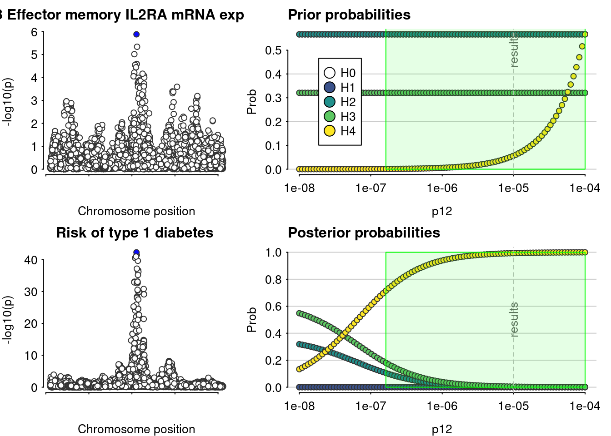

Last updated: 2024-05-14
Checks: 7 0
Knit directory: 2023-T1DSCREEN/
This reproducible R Markdown analysis was created with workflowr (version 1.7.1). The Checks tab describes the reproducibility checks that were applied when the results were created. The Past versions tab lists the development history.
Great! Since the R Markdown file has been committed to the Git repository, you know the exact version of the code that produced these results.
Great job! The global environment was empty. Objects defined in the global environment can affect the analysis in your R Markdown file in unknown ways. For reproduciblity it’s best to always run the code in an empty environment.
The command set.seed(20220313) was run prior to running
the code in the R Markdown file. Setting a seed ensures that any results
that rely on randomness, e.g. subsampling or permutations, are
reproducible.
Great job! Recording the operating system, R version, and package versions is critical for reproducibility.
Nice! There were no cached chunks for this analysis, so you can be confident that you successfully produced the results during this run.
Great job! Using relative paths to the files within your workflowr project makes it easier to run your code on other machines.
Great! You are using Git for version control. Tracking code development and connecting the code version to the results is critical for reproducibility.
The results in this page were generated with repository version 4a08527. See the Past versions tab to see a history of the changes made to the R Markdown and HTML files.
Note that you need to be careful to ensure that all relevant files for
the analysis have been committed to Git prior to generating the results
(you can use wflow_publish or
wflow_git_commit). workflowr only checks the R Markdown
file, but you know if there are other scripts or data files that it
depends on. Below is the status of the Git repository when the results
were generated:
Ignored files:
Ignored: .Rhistory
Ignored: .Rproj.user/
Ignored: data/export_harmonization/
Ignored: data/export_manuscript/
Ignored: data/import/
Ignored: figures/diagram-sc-analyses.svg
Ignored: figures/sc_coloc_sensitivity/
Ignored: submission/
Untracked files:
Untracked: 2018-07-18_SNP_AF_for_AlleleB_combined_allele_counts_and_MAF_pos_added.txt.gz
Untracked: 2019-12-11-cis-eQTLsFDR-ProbeLevel-CohortInfoRemoved-BonferroniAdded.txt.gz
Untracked: 2620_4_IL6ST_gp130__soluble.txt.gz
Untracked: 34012112-GCST90014023-EFO_0001359-Build38.f.tsv.gz
Untracked: 34012112-GCST90014023-EFO_0001359.h.tsv.gz
Untracked: README.txt.1
Untracked: Rebuttal.docx
Untracked: assocvariants.annotated.txt.gz
Untracked: celltypes_scQTL_coloc.tar.gz
Untracked: coloc-sensitivity-IL2RA-cd4eff.png
Untracked: coloc-sensitivity-spleen-IL2RA.png
Untracked: coloc-sensitivity_IL2RA-CD8em.png
Untracked: data/cis_sumstats/
Untracked: data/export_sc_harmonized/
Untracked: data/get-data
Untracked: input_scQTL_coloc.tar.gz
Untracked: md5sum.txt.1
Untracked: wget-log
Untracked: wget-log.1
Untracked: wget-log.2
Unstaged changes:
Modified: Build-script.R
Modified: T1DSCREEN.Rproj
Modified: analyses/IL2RA.Rmd
Modified: code/00-shell-wget-decompress-T1D-and-eQTLgen
Modified: code/01-Functions.R
Modified: code/02-Gather.R
Modified: code/03-Harmonize.R
Modified: code/05-Save-LD-matrices.R
Modified: data/export_cis_sumstats/IL2RA_T1D.rds
Modified: data/export_cis_sumstats/IL2RB_T1D.rds
Modified: data/export_cis_sumstats/IL6R_T1D.rds
Modified: data/export_cis_sumstats/IL6ST_T1D.rds
Modified: data/export_cis_sumstats/JAK2_T1D.rds
Modified: data/export_cis_sumstats/JAK3_T1D.rds
Modified: data/export_cis_sumstats/TYK2_T1D.rds
Modified: data/export_cis_sumstats/eqtl_IL2RA-Gather.rds
Modified: data/export_cis_sumstats/eqtl_IL2RB-Gather.rds
Modified: data/export_cis_sumstats/eqtl_IL6R-Gather.rds
Modified: data/export_cis_sumstats/eqtl_JAK2-Gather.rds
Modified: data/export_cis_sumstats/eqtl_JAK3-Gather.rds
Modified: data/export_cis_sumstats/eqtl_TYK2-Gather.rds
Note that any generated files, e.g. HTML, png, CSS, etc., are not included in this status report because it is ok for generated content to have uncommitted changes.
These are the previous versions of the repository in which changes were
made to the R Markdown (analyses/Single-cell-analyses.Rmd)
and HTML (docs/Single-cell-analyses.html) files. If you’ve
configured a remote Git repository (see ?wflow_git_remote),
click on the hyperlinks in the table below to view the files as they
were in that past version.
| File | Version | Author | Date | Message |
|---|---|---|---|---|
| Rmd | 4a08527 | Jaakko Koskenniemi | 2024-05-14 | wflow_publish("analyses/Single-cell-analyses.Rmd") |
Load packages and import data
pacman::p_load(tidyverse, data.table, coloc, TwoSampleMR, ggpubr,
ieugwasr, rio, here, viridis)
here::i_am("analyses/IL2RA.Rmd")here() starts at /home/jajoko/Documents/2023-T1DSCREENsource("code/01-Functions.R")Warning in .fun(piece, ...): Duplicated SNPs present in exposure data for phenotype 'CD8 Effector memory IL2RA mRNA expression. Just keeping the first instance:
rs7071060
rs1340036
rs12722558
rs12722490Warning in format_data(as.data.frame(exposure_dat), type = "exposure", snps = NULL, : The following columns are not present and are required for MR analysis
betaseWarning in format_data(as.data.frame(exposure_dat), type = "exposure", snps =
NULL, : None of the provided SNPs can be used for MR analysis, they are missing
required information.Harmonising CD8 Effector memory IL2RA mRNA expression (4vucPG) and Risk of type 1 diabetes (xN25Oe)Removing the following SNPs for being palindromic with intermediate allele frequencies:
rs10444202, rs10752125, rs10795240, rs10795260, rs10795263, rs10795595, rs10795990, rs10905054, rs10905919, rs10905924, rs10905925, rs1110030, rs11252965, rs11252969, rs11252984, rs11252986, rs11252995, rs11253001, rs11253120, rs11256644, rs11259366, rs11517339, rs11596992, rs11598835, rs12218872, rs12219621, rs12249094, rs12250785, rs12258845, rs12416002, rs12772061, rs12778215, rs1417017, rs1937877, rs1937911, rs1937918, rs2263201, rs2380208, rs2387089, rs2398200, rs2398206, rs2486876, rs2490678, rs2791417, rs2791425, rs2895063, rs34074567, rs34797495, rs3750638, rs4291579, rs4427472, rs4436455, rs4497300, rs4747385, rs4747846, rs4747960, rs4748301, rs4748304, rs4748361, rs4748627, rs4880727, rs4881462, rs584804, rs630516, rs645611, rs6601912, rs6602364, rs672624, rs678304, rs7071371, rs7073128, rs7088072, rs7896234, rs7896512, rs7897260, rs7910038, rs7914609, rs7916376, rs7916509, rs8177631, rs8177633, rs9424179Warning in check_dataset(d = dataset1, 1): minimum p value is: 1.3187e-06
If this is what you expected, this is not a problem.
If this is not as small as you expected, please check you supplied var(beta) and not sd(beta) for the varbeta argument. If that's not the explanation, please check the 02_data vignette.PP.H0.abf PP.H1.abf PP.H2.abf PP.H3.abf PP.H4.abf
3.65e-39 7.82e-39 2.38e-03 4.09e-03 9.94e-01
[1] "PP abf for shared variant: 99.4%"Results pass decision rule H4 > 0.7
#Example how data can be imported to R
IL2RA_bin <- import_data("data/export_sc_harmonized/IL2RA_bin_TwoSampleMR.csv",
"data/export_harmonization/IL2RA_T1D_TwoSampleMR.csv", has_beta = FALSE)Warning in .fun(piece, ...): Duplicated SNPs present in exposure data for phenotype 'Naïve/Immature B Cell IL2RA mRNA expression. Just keeping the first instance:
rs7071060
rs1340036Warning in format_data(as.data.frame(exposure_dat), type = "exposure", snps = NULL, : The following columns are not present and are required for MR analysis
betaseWarning in format_data(as.data.frame(exposure_dat), type = "exposure", snps =
NULL, : None of the provided SNPs can be used for MR analysis, they are missing
required information.Harmonising Naïve/Immature B Cell IL2RA mRNA expression (qs1g78) and Risk of type 1 diabetes (f66Ik5)Removing the following SNPs for being palindromic with intermediate allele frequencies:
rs10444202, rs10752125, rs10795240, rs10795260, rs10795263, rs10795595, rs10795990, rs10905054, rs10905919, rs10905924, rs10905925, rs1110030, rs11252965, rs11252969, rs11252984, rs11252986, rs11252995, rs11253001, rs11253120, rs11256644, rs11259366, rs11517339, rs11596992, rs11598835, rs12218872, rs12219621, rs12249094, rs12250785, rs12258845, rs12416002, rs12772061, rs12778215, rs1417017, rs1937877, rs1937911, rs1937918, rs2263201, rs2380208, rs2387089, rs2398200, rs2398206, rs2486876, rs2490678, rs2791417, rs2791425, rs2895063, rs34074567, rs34797495, rs3750638, rs4291579, rs4427472, rs4436455, rs4497300, rs4747385, rs4747846, rs4747960, rs4748301, rs4748304, rs4748361, rs4748627, rs4880727, rs4881462, rs584804, rs630516, rs645611, rs6601912, rs6602364, rs672624, rs678304, rs7071371, rs7073128, rs7088072, rs7896234, rs7896512, rs7897260, rs7910038, rs7914609, rs7916376, rs7916509, rs8177631, rs8177633, rs9424179#List the possible combinations of target and cell type
testing_grid <- expand.grid(
exposure_gene = c("IL2RA", "IL6R", "TYK2"),
exposure_celltype = c(
"bin",
"bmem",
"cd4et",
"cd4nc",
"cd4sox4",
"cd8et",
"cd8nc",
"cd8s100b",
"dc",
"monoc",
"mononc",
"nkr",
"nk",
"plasma"
)
)
#Exclude those combinations for which there is no data (and turn to character)
testing_grid <- testing_grid %>%
filter(!(exposure_gene == "IL2RA" & exposure_celltype %in% c("dc", "mononc", "plasma"))) %>%
filter(!(exposure_gene == "IL6R" & exposure_celltype %in% c("nkr"))) %>%
mutate(across(everything(), as.character))
dir.create("figures/sc_coloc_sensitivity/")Warning in dir.create("figures/sc_coloc_sensitivity/"):
'figures/sc_coloc_sensitivity' already existspng(file = paste0("figures/sc_coloc_sensitivity/", "plot_%03d.png"), width = 900, height = 600)
#Test for the 38 colocalizations (target + cell type) and get the coloc hypothesis tables
# (h0= neither is associated with SNPs h1 = only exposure is associated with SNPs,
# h2 = only outcome is associated with SNPs, h3= both are associated with SNPs, but does not colocalize,
# h4 = both are associated and colocalize)
res <- map2(testing_grid$exposure_gene,
testing_grid$exposure_celltype,
~get_coloc_hypothesis_table_for_sc(.x, .y))Warning in .fun(piece, ...): Duplicated SNPs present in exposure data for phenotype 'Naïve/Immature B Cell IL2RA mRNA expression. Just keeping the first instance:
rs7071060
rs1340036Warning in format_data(as.data.frame(exposure_dat), type = "exposure", snps = NULL, : The following columns are not present and are required for MR analysis
betaseWarning in format_data(as.data.frame(exposure_dat), type = "exposure", snps =
NULL, : None of the provided SNPs can be used for MR analysis, they are missing
required information.Harmonising Naïve/Immature B Cell IL2RA mRNA expression (YmFgZd) and Risk of type 1 diabetes (7AGYwY)
Removing the following SNPs for being palindromic with intermediate allele frequencies:
rs10444202, rs10752125, rs10795240, rs10795260, rs10795263, rs10795595, rs10795990, rs10905054, rs10905919, rs10905924, rs10905925, rs1110030, rs11252965, rs11252969, rs11252984, rs11252986, rs11252995, rs11253001, rs11253120, rs11256644, rs11259366, rs11517339, rs11596992, rs11598835, rs12218872, rs12219621, rs12249094, rs12250785, rs12258845, rs12416002, rs12772061, rs12778215, rs1417017, rs1937877, rs1937911, rs1937918, rs2263201, rs2380208, rs2387089, rs2398200, rs2398206, rs2486876, rs2490678, rs2791417, rs2791425, rs2895063, rs34074567, rs34797495, rs3750638, rs4291579, rs4427472, rs4436455, rs4497300, rs4747385, rs4747846, rs4747960, rs4748301, rs4748304, rs4748361, rs4748627, rs4880727, rs4881462, rs584804, rs630516, rs645611, rs6601912, rs6602364, rs672624, rs678304, rs7071371, rs7073128, rs7088072, rs7896234, rs7896512, rs7897260, rs7910038, rs7914609, rs7916376, rs7916509, rs8177631, rs8177633, rs9424179Warning in check_dataset(d = dataset1, 1): minimum p value is: 0.0034392
If this is what you expected, this is not a problem.
If this is not as small as you expected, please check you supplied var(beta) and not sd(beta) for the varbeta argument. If that's not the explanation, please check the 02_data vignette.PP.H0.abf PP.H1.abf PP.H2.abf PP.H3.abf PP.H4.abf
1.11e-36 3.64e-37 7.23e-01 2.37e-01 4.04e-02
[1] "PP abf for shared variant: 4.04%"Results fail decision rule H4 > 0.7Warning in format_data(as.data.frame(exposure_dat), type = "exposure", snps = NULL, : The following columns are not present and are required for MR analysis
betase
Warning in format_data(as.data.frame(exposure_dat), type = "exposure", snps = NULL, : None of the provided SNPs can be used for MR analysis, they are missing required information.Harmonising Naïve/Immature B Cell IL6R mRNA expression (7Zd3zx) and Risk of type 1 diabetes (wjt5Q0)Removing the following SNPs for being palindromic with intermediate allele frequencies:
rs10796934, rs10908848, rs11264314, rs11264318, rs11548102, rs11581730, rs11802588, rs11802757, rs1194592, rs1194600, rs12095061, rs12127609, rs12730186, rs12737861, rs1760794, rs1760795, rs1760802, rs1760803, rs1976559, rs2633433, rs28510471, rs28518786, rs2879788, rs2990220, rs35504625, rs3790411, rs4601580, rs4745, rs4845398, rs4845566, rs4845676, rs4845694, rs4971088, rs497829, rs61811388, rs6683557, rs6686873, rs6699729, rs7367897, rs7531982, rs7549338, rs913860, rs9330261, rs9426826, rs9426831, rs9426886, rs9427117, rs9427220, rs9661993, rs9699949, rs9793588, rs9794000, rs9943093Warning in check_dataset(d = dataset1, 1): minimum p value is: 0.0044011
If this is what you expected, this is not a problem.
If this is not as small as you expected, please check you supplied var(beta) and not sd(beta) for the varbeta argument. If that's not the explanation, please check the 02_data vignette.Warning in check_dataset(d = dataset2, 2): minimum p value is: 2.28e-06
If this is what you expected, this is not a problem.
If this is not as small as you expected, please check you supplied var(beta) and not sd(beta) for the varbeta argument. If that's not the explanation, please check the 02_data vignette.PP.H0.abf PP.H1.abf PP.H2.abf PP.H3.abf PP.H4.abf
0.1270 0.0193 0.7170 0.1090 0.0278
[1] "PP abf for shared variant: 2.78%"Results fail decision rule H4 > 0.7Warning in format_data(as.data.frame(exposure_dat), type = "exposure", snps = NULL, : The following columns are not present and are required for MR analysis
betaseWarning in format_data(as.data.frame(exposure_dat), type = "exposure", snps =
NULL, : None of the provided SNPs can be used for MR analysis, they are missing
required information.Harmonising Naïve/Immature B Cell TYK2 mRNA expression (77i4zg) and Risk of type 1 diabetes (bgWINP)Removing the following SNPs for being palindromic with intermediate allele frequencies:
rs1037686, rs10416414, rs10417443, rs10421649, rs11085587, rs113098768, rs11668706, rs12710260, rs12979606, rs12981841, rs12982962, rs12985305, rs13344456, rs1368459, rs1644726, rs1644730, rs1862471, rs1895371, rs1968236, rs2075741, rs2161468, rs2287813, rs2305792, rs2445885, rs2569703, rs2738446, rs2738448, rs281432, rs322144, rs322145, rs3786698, rs3826709, rs3826803, rs4804526, rs55686442, rs61032644, rs6511685, rs67475684, rs6887, rs710845, rs7245579, rs7252965, rs7254559, rs7256625, rs7258340, rs73017023, rs749261, rs753859, rs8100854, rs8112953, rs8113000, rs8182463, rs885743, rs896412, rs918539, rs9973219Warning in check_dataset(d = dataset1, 1): minimum p value is: 0.0048922
If this is what you expected, this is not a problem.
If this is not as small as you expected, please check you supplied var(beta) and not sd(beta) for the varbeta argument. If that's not the explanation, please check the 02_data vignette.PP.H0.abf PP.H1.abf PP.H2.abf PP.H3.abf PP.H4.abf
1.16e-11 2.77e-12 7.71e-01 1.85e-01 4.44e-02
[1] "PP abf for shared variant: 4.44%"Results fail decision rule H4 > 0.7Warning in .fun(piece, ...): Duplicated SNPs present in exposure data for phenotype 'Memory B Cell IL2RA mRNA expression. Just keeping the first instance:
rs7071060
rs1340036Warning in format_data(as.data.frame(exposure_dat), type = "exposure", snps = NULL, : The following columns are not present and are required for MR analysis
betaseWarning in format_data(as.data.frame(exposure_dat), type = "exposure", snps =
NULL, : None of the provided SNPs can be used for MR analysis, they are missing
required information.Harmonising Memory B Cell IL2RA mRNA expression (TN0tSJ) and Risk of type 1 diabetes (E1vyZH)Removing the following SNPs for being palindromic with intermediate allele frequencies:
rs10444202, rs10752125, rs10795240, rs10795260, rs10795263, rs10795595, rs10795990, rs10905054, rs10905919, rs10905924, rs10905925, rs1110030, rs11252965, rs11252969, rs11252984, rs11252986, rs11252995, rs11253001, rs11253120, rs11256644, rs11259366, rs11517339, rs11596992, rs11598835, rs12218872, rs12219621, rs12249094, rs12250785, rs12258845, rs12416002, rs12772061, rs12778215, rs1417017, rs1937877, rs1937911, rs1937918, rs2263201, rs2380208, rs2387089, rs2398200, rs2398206, rs2486876, rs2490678, rs2791417, rs2791425, rs2895063, rs34074567, rs34797495, rs3750638, rs4291579, rs4427472, rs4436455, rs4497300, rs4747385, rs4747846, rs4747960, rs4748301, rs4748304, rs4748361, rs4748627, rs4880727, rs4881462, rs584804, rs630516, rs645611, rs6601912, rs6602364, rs672624, rs678304, rs7071371, rs7073128, rs7088072, rs7896234, rs7896512, rs7897260, rs7910038, rs7914609, rs7916376, rs7916509, rs8177631, rs8177633, rs9424179Warning in check_dataset(d = dataset1, 1): minimum p value is: 0.00031209
If this is what you expected, this is not a problem.
If this is not as small as you expected, please check you supplied var(beta) and not sd(beta) for the varbeta argument. If that's not the explanation, please check the 02_data vignette.PP.H0.abf PP.H1.abf PP.H2.abf PP.H3.abf PP.H4.abf
9.85e-37 5.06e-37 6.40e-01 3.29e-01 3.12e-02
[1] "PP abf for shared variant: 3.12%"Results fail decision rule H4 > 0.7Warning in format_data(as.data.frame(exposure_dat), type = "exposure", snps = NULL, : The following columns are not present and are required for MR analysis
betase
Warning in format_data(as.data.frame(exposure_dat), type = "exposure", snps = NULL, : None of the provided SNPs can be used for MR analysis, they are missing required information.Harmonising Memory B Cell IL6R mRNA expression (H0q8ZP) and Risk of type 1 diabetes (nAshWv)Removing the following SNPs for being palindromic with intermediate allele frequencies:
rs10796934, rs10908848, rs11264314, rs11264318, rs11548102, rs11581730, rs11802588, rs11802757, rs1194592, rs1194600, rs12095061, rs12127609, rs12730186, rs12737861, rs1760794, rs1760795, rs1760802, rs1760803, rs1976559, rs2633433, rs28510471, rs28518786, rs2879788, rs2990220, rs35504625, rs3790411, rs4601580, rs4745, rs4845398, rs4845566, rs4845676, rs4845694, rs4971088, rs497829, rs61811388, rs6683557, rs6686873, rs6699729, rs7367897, rs7531982, rs7549338, rs913860, rs9330261, rs9426826, rs9426831, rs9426886, rs9427117, rs9427220, rs9661993, rs9699949, rs9793588, rs9794000, rs9943093Warning in check_dataset(d = dataset2, 2): minimum p value is: 2.28e-06
If this is what you expected, this is not a problem.
If this is not as small as you expected, please check you supplied var(beta) and not sd(beta) for the varbeta argument. If that's not the explanation, please check the 02_data vignette.PP.H0.abf PP.H1.abf PP.H2.abf PP.H3.abf PP.H4.abf
0.0459 0.1030 0.2580 0.5820 0.0109
[1] "PP abf for shared variant: 1.09%"Results fail decision rule H4 > 0.7Warning in format_data(as.data.frame(exposure_dat), type = "exposure", snps = NULL, : The following columns are not present and are required for MR analysis
betase
Warning in format_data(as.data.frame(exposure_dat), type = "exposure", snps = NULL, : None of the provided SNPs can be used for MR analysis, they are missing required information.Harmonising Memory B Cell TYK2 mRNA expression (WSmIzz) and Risk of type 1 diabetes (rki5af)Removing the following SNPs for being palindromic with intermediate allele frequencies:
rs1037686, rs10416414, rs10417443, rs10421649, rs11085587, rs113098768, rs11668706, rs12710260, rs12979606, rs12981841, rs12982962, rs12985305, rs13344456, rs1368459, rs1644726, rs1644730, rs1862471, rs1895371, rs1968236, rs2075741, rs2161468, rs2287813, rs2305792, rs2445885, rs2569703, rs2738446, rs2738448, rs281432, rs322144, rs322145, rs3786698, rs3826709, rs3826803, rs4804526, rs55686442, rs61032644, rs6511685, rs67475684, rs6887, rs710845, rs7245579, rs7252965, rs7254559, rs7256625, rs7258340, rs73017023, rs749261, rs753859, rs8100854, rs8112953, rs8113000, rs8182463, rs885743, rs896412, rs918539, rs9973219Warning in check_dataset(d = dataset1, 1): minimum p value is: 9.0556e-05
If this is what you expected, this is not a problem.
If this is not as small as you expected, please check you supplied var(beta) and not sd(beta) for the varbeta argument. If that's not the explanation, please check the 02_data vignette.PP.H0.abf PP.H1.abf PP.H2.abf PP.H3.abf PP.H4.abf
7.66e-12 3.27e-12 5.10e-01 2.18e-01 2.72e-01
[1] "PP abf for shared variant: 27.2%"Results fail decision rule H4 > 0.7Warning in .fun(piece, ...): Duplicated SNPs present in exposure data for phenotype 'CD4 Effector memory/TEMRA IL2RA mRNA expression. Just keeping the first instance:
rs7071060
rs1340036Warning in format_data(as.data.frame(exposure_dat), type = "exposure", snps = NULL, : The following columns are not present and are required for MR analysis
betaseWarning in format_data(as.data.frame(exposure_dat), type = "exposure", snps =
NULL, : None of the provided SNPs can be used for MR analysis, they are missing
required information.Harmonising CD4 Effector memory/TEMRA IL2RA mRNA expression (ao0bUi) and Risk of type 1 diabetes (DlEgfH)Removing the following SNPs for being palindromic with intermediate allele frequencies:
rs10444202, rs10752125, rs10795240, rs10795260, rs10795263, rs10795595, rs10795990, rs10905054, rs10905919, rs10905924, rs10905925, rs1110030, rs11252965, rs11252969, rs11252984, rs11252986, rs11252995, rs11253001, rs11253120, rs11256644, rs11259366, rs11517339, rs11596992, rs11598835, rs12218872, rs12219621, rs12249094, rs12250785, rs12258845, rs12416002, rs12772061, rs12778215, rs1417017, rs1937877, rs1937911, rs1937918, rs2263201, rs2380208, rs2387089, rs2398200, rs2398206, rs2486876, rs2490678, rs2791417, rs2791425, rs2895063, rs34074567, rs34797495, rs3750638, rs4291579, rs4427472, rs4436455, rs4497300, rs4747385, rs4747846, rs4747960, rs4748301, rs4748304, rs4748361, rs4748627, rs4880727, rs4881462, rs584804, rs630516, rs645611, rs6601912, rs6602364, rs672624, rs678304, rs7071371, rs7073128, rs7088072, rs7896234, rs7896512, rs7897260, rs7910038, rs7914609, rs7916376, rs7916509, rs8177631, rs8177633, rs9424179Warning in check_dataset(d = dataset1, 1): minimum p value is: 0.00027204
If this is what you expected, this is not a problem.
If this is not as small as you expected, please check you supplied var(beta) and not sd(beta) for the varbeta argument. If that's not the explanation, please check the 02_data vignette.PP.H0.abf PP.H1.abf PP.H2.abf PP.H3.abf PP.H4.abf
4.11e-37 3.22e-37 2.67e-01 2.08e-01 5.24e-01
[1] "PP abf for shared variant: 52.4%"Results fail decision rule H4 > 0.7Warning in format_data(as.data.frame(exposure_dat), type = "exposure", snps = NULL, : The following columns are not present and are required for MR analysis
betase
Warning in format_data(as.data.frame(exposure_dat), type = "exposure", snps = NULL, : None of the provided SNPs can be used for MR analysis, they are missing required information.Harmonising CD4 Effector memory/TEMRA IL6R mRNA expression (dTKL5t) and Risk of type 1 diabetes (QP9pOs)Removing the following SNPs for being palindromic with intermediate allele frequencies:
rs10796934, rs10908848, rs11264314, rs11264318, rs11548102, rs11581730, rs11802588, rs11802757, rs1194592, rs1194600, rs12095061, rs12127609, rs12730186, rs12737861, rs1760794, rs1760795, rs1760802, rs1760803, rs1976559, rs2633433, rs28510471, rs28518786, rs2879788, rs2990220, rs35504625, rs3790411, rs4601580, rs4745, rs4845398, rs4845566, rs4845676, rs4845694, rs4971088, rs497829, rs61811388, rs6683557, rs6686873, rs6699729, rs7367897, rs7531982, rs7549338, rs913860, rs9330261, rs9426826, rs9426831, rs9426886, rs9427117, rs9427220, rs9661993, rs9699949, rs9793588, rs9794000, rs9943093Warning in check_dataset(d = dataset1, 1): minimum p value is: 0.0012872
If this is what you expected, this is not a problem.
If this is not as small as you expected, please check you supplied var(beta) and not sd(beta) for the varbeta argument. If that's not the explanation, please check the 02_data vignette.Warning in check_dataset(d = dataset2, 2): minimum p value is: 2.28e-06
If this is what you expected, this is not a problem.
If this is not as small as you expected, please check you supplied var(beta) and not sd(beta) for the varbeta argument. If that's not the explanation, please check the 02_data vignette.PP.H0.abf PP.H1.abf PP.H2.abf PP.H3.abf PP.H4.abf
0.1250 0.0208 0.7020 0.1170 0.0349
[1] "PP abf for shared variant: 3.49%"Results fail decision rule H4 > 0.7Warning in format_data(as.data.frame(exposure_dat), type = "exposure", snps = NULL, : The following columns are not present and are required for MR analysis
betaseWarning in format_data(as.data.frame(exposure_dat), type = "exposure", snps =
NULL, : None of the provided SNPs can be used for MR analysis, they are missing
required information.Harmonising CD4 Effector memory/TEMRA TYK2 mRNA expression (9Y4utF) and Risk of type 1 diabetes (ybicg1)Removing the following SNPs for being palindromic with intermediate allele frequencies:
rs1037686, rs10416414, rs10417443, rs10421649, rs11085587, rs113098768, rs11668706, rs12710260, rs12979606, rs12981841, rs12982962, rs12985305, rs13344456, rs1368459, rs1644726, rs1644730, rs1862471, rs1895371, rs1968236, rs2075741, rs2161468, rs2287813, rs2305792, rs2445885, rs2569703, rs2738446, rs2738448, rs281432, rs322144, rs322145, rs3786698, rs3826709, rs3826803, rs4804526, rs55686442, rs61032644, rs6511685, rs67475684, rs6887, rs710845, rs7245579, rs7252965, rs7254559, rs7256625, rs7258340, rs73017023, rs749261, rs753859, rs8100854, rs8112953, rs8113000, rs8182463, rs885743, rs896412, rs918539, rs9973219Warning in check_dataset(d = dataset1, 1): minimum p value is: 0.00088985
If this is what you expected, this is not a problem.
If this is not as small as you expected, please check you supplied var(beta) and not sd(beta) for the varbeta argument. If that's not the explanation, please check the 02_data vignette.PP.H0.abf PP.H1.abf PP.H2.abf PP.H3.abf PP.H4.abf
1.17e-11 2.67e-12 7.79e-01 1.78e-01 4.36e-02
[1] "PP abf for shared variant: 4.36%"Results fail decision rule H4 > 0.7Warning in .fun(piece, ...): Duplicated SNPs present in exposure data for phenotype 'CD4 Naive/Central memory T cell IL2RA mRNA expression. Just keeping the first instance:
rs7071060
rs1340036Warning in format_data(as.data.frame(exposure_dat), type = "exposure", snps = NULL, : The following columns are not present and are required for MR analysis
betaseWarning in format_data(as.data.frame(exposure_dat), type = "exposure", snps =
NULL, : None of the provided SNPs can be used for MR analysis, they are missing
required information.Harmonising CD4 Naive/Central memory T cell IL2RA mRNA expression (EqEqlU) and Risk of type 1 diabetes (czkZjj)Removing the following SNPs for being palindromic with intermediate allele frequencies:
rs10444202, rs10752125, rs10795240, rs10795260, rs10795263, rs10795595, rs10795990, rs10905054, rs10905919, rs10905924, rs10905925, rs1110030, rs11252965, rs11252969, rs11252984, rs11252986, rs11252995, rs11253001, rs11253120, rs11256644, rs11259366, rs11517339, rs11596992, rs11598835, rs12218872, rs12219621, rs12249094, rs12250785, rs12258845, rs12416002, rs12772061, rs12778215, rs1417017, rs1937877, rs1937911, rs1937918, rs2263201, rs2380208, rs2387089, rs2398200, rs2398206, rs2486876, rs2490678, rs2791417, rs2791425, rs2895063, rs34074567, rs34797495, rs3750638, rs4291579, rs4427472, rs4436455, rs4497300, rs4747385, rs4747846, rs4747960, rs4748301, rs4748304, rs4748361, rs4748627, rs4880727, rs4881462, rs584804, rs630516, rs645611, rs6601912, rs6602364, rs672624, rs678304, rs7071371, rs7073128, rs7088072, rs7896234, rs7896512, rs7897260, rs7910038, rs7914609, rs7916376, rs7916509, rs8177631, rs8177633, rs9424179Warning in check_dataset(d = dataset1, 1): minimum p value is: 0.00034918
If this is what you expected, this is not a problem.
If this is not as small as you expected, please check you supplied var(beta) and not sd(beta) for the varbeta argument. If that's not the explanation, please check the 02_data vignette.PP.H0.abf PP.H1.abf PP.H2.abf PP.H3.abf PP.H4.abf
9.06e-37 4.94e-37 5.89e-01 3.21e-01 8.97e-02
[1] "PP abf for shared variant: 8.97%"Results fail decision rule H4 > 0.7Warning in format_data(as.data.frame(exposure_dat), type = "exposure", snps = NULL, : The following columns are not present and are required for MR analysis
betase
Warning in format_data(as.data.frame(exposure_dat), type = "exposure", snps = NULL, : None of the provided SNPs can be used for MR analysis, they are missing required information.Harmonising CD4 Naive/Central memory T cell IL6R mRNA expression (pxiXeP) and Risk of type 1 diabetes (YQYN9S)Removing the following SNPs for being palindromic with intermediate allele frequencies:
rs10796934, rs10908848, rs11264314, rs11264318, rs11548102, rs11581730, rs11802588, rs11802757, rs1194592, rs1194600, rs12095061, rs12127609, rs12730186, rs12737861, rs1760794, rs1760795, rs1760802, rs1760803, rs1976559, rs2633433, rs28510471, rs28518786, rs2879788, rs2990220, rs35504625, rs3790411, rs4601580, rs4745, rs4845398, rs4845566, rs4845676, rs4845694, rs4971088, rs497829, rs61811388, rs6683557, rs6686873, rs6699729, rs7367897, rs7531982, rs7549338, rs913860, rs9330261, rs9426826, rs9426831, rs9426886, rs9427117, rs9427220, rs9661993, rs9699949, rs9793588, rs9794000, rs9943093Warning in check_dataset(d = dataset1, 1): minimum p value is: 0.0025121
If this is what you expected, this is not a problem.
If this is not as small as you expected, please check you supplied var(beta) and not sd(beta) for the varbeta argument. If that's not the explanation, please check the 02_data vignette.Warning in check_dataset(d = dataset2, 2): minimum p value is: 2.28e-06
If this is what you expected, this is not a problem.
If this is not as small as you expected, please check you supplied var(beta) and not sd(beta) for the varbeta argument. If that's not the explanation, please check the 02_data vignette.PP.H0.abf PP.H1.abf PP.H2.abf PP.H3.abf PP.H4.abf
0.1160 0.0234 0.6520 0.1320 0.0768
[1] "PP abf for shared variant: 7.68%"Results fail decision rule H4 > 0.7Warning in format_data(as.data.frame(exposure_dat), type = "exposure", snps = NULL, : The following columns are not present and are required for MR analysis
betaseWarning in format_data(as.data.frame(exposure_dat), type = "exposure", snps =
NULL, : None of the provided SNPs can be used for MR analysis, they are missing
required information.Harmonising CD4 Naive/Central memory T cell TYK2 mRNA expression (Tsnphm) and Risk of type 1 diabetes (Oa1rqy)Removing the following SNPs for being palindromic with intermediate allele frequencies:
rs1037686, rs10416414, rs10417443, rs10421649, rs11085587, rs113098768, rs11668706, rs12710260, rs12979606, rs12981841, rs12982962, rs12985305, rs13344456, rs1368459, rs1644726, rs1644730, rs1862471, rs1895371, rs1968236, rs2075741, rs2161468, rs2287813, rs2305792, rs2445885, rs2569703, rs2738446, rs2738448, rs281432, rs322144, rs322145, rs3786698, rs3826709, rs3826803, rs4804526, rs55686442, rs61032644, rs6511685, rs67475684, rs6887, rs710845, rs7245579, rs7252965, rs7254559, rs7256625, rs7258340, rs73017023, rs749261, rs753859, rs8100854, rs8112953, rs8113000, rs8182463, rs885743, rs896412, rs918539, rs9973219Warning in check_dataset(d = dataset1, 1): minimum p value is: 0.01263
If this is what you expected, this is not a problem.
If this is not as small as you expected, please check you supplied var(beta) and not sd(beta) for the varbeta argument. If that's not the explanation, please check the 02_data vignette.PP.H0.abf PP.H1.abf PP.H2.abf PP.H3.abf PP.H4.abf
1.11e-11 2.43e-12 7.37e-01 1.62e-01 1.01e-01
[1] "PP abf for shared variant: 10.1%"Results fail decision rule H4 > 0.7Warning in .fun(piece, ...): Duplicated SNPs present in exposure data for phenotype 'CD4 SOX4 T cell IL2RA mRNA expression. Just keeping the first instance:
rs7071060
rs1340036Warning in format_data(as.data.frame(exposure_dat), type = "exposure", snps = NULL, : The following columns are not present and are required for MR analysis
betaseWarning in format_data(as.data.frame(exposure_dat), type = "exposure", snps =
NULL, : None of the provided SNPs can be used for MR analysis, they are missing
required information.Harmonising CD4 SOX4 T cell IL2RA mRNA expression (E6B52a) and Risk of type 1 diabetes (nOeFiz)Removing the following SNPs for being palindromic with intermediate allele frequencies:
rs10444202, rs10752125, rs10795240, rs10795260, rs10795263, rs10795595, rs10795990, rs10905054, rs10905919, rs10905924, rs10905925, rs1110030, rs11252965, rs11252969, rs11252984, rs11252986, rs11252995, rs11253001, rs11253120, rs11256644, rs11259366, rs11517339, rs11596992, rs11598835, rs12218872, rs12219621, rs12249094, rs12250785, rs12258845, rs12416002, rs12772061, rs12778215, rs1417017, rs1937877, rs1937911, rs1937918, rs2263201, rs2380208, rs2387089, rs2398200, rs2398206, rs2486876, rs2490678, rs2791417, rs2791425, rs2895063, rs34074567, rs34797495, rs3750638, rs4291579, rs4427472, rs4436455, rs4497300, rs4747385, rs4747846, rs4747960, rs4748301, rs4748304, rs4748361, rs4748627, rs4880727, rs4881462, rs584804, rs630516, rs645611, rs6601912, rs6602364, rs672624, rs678304, rs7071371, rs7073128, rs7088072, rs7896234, rs7896512, rs7897260, rs7910038, rs7914609, rs7916376, rs7916509, rs8177631, rs8177633, rs9424179Warning in check_dataset(d = dataset1, 1): minimum p value is: 0.00012603
If this is what you expected, this is not a problem.
If this is not as small as you expected, please check you supplied var(beta) and not sd(beta) for the varbeta argument. If that's not the explanation, please check the 02_data vignette.PP.H0.abf PP.H1.abf PP.H2.abf PP.H3.abf PP.H4.abf
9.32e-37 5.57e-37 6.06e-01 3.62e-01 3.26e-02
[1] "PP abf for shared variant: 3.26%"Results fail decision rule H4 > 0.7Warning in format_data(as.data.frame(exposure_dat), type = "exposure", snps = NULL, : The following columns are not present and are required for MR analysis
betase
Warning in format_data(as.data.frame(exposure_dat), type = "exposure", snps = NULL, : None of the provided SNPs can be used for MR analysis, they are missing required information.Harmonising CD4 SOX4 T cell IL6R mRNA expression (NZp2I4) and Risk of type 1 diabetes (4JWPYZ)Removing the following SNPs for being palindromic with intermediate allele frequencies:
rs10796934, rs10908848, rs11264314, rs11264318, rs11548102, rs11581730, rs11802588, rs11802757, rs1194592, rs1194600, rs12095061, rs12127609, rs12730186, rs12737861, rs1760794, rs1760795, rs1760802, rs1760803, rs1976559, rs2633433, rs28510471, rs28518786, rs2879788, rs2990220, rs35504625, rs3790411, rs4601580, rs4745, rs4845398, rs4845566, rs4845676, rs4845694, rs4971088, rs497829, rs61811388, rs6683557, rs6686873, rs6699729, rs7367897, rs7531982, rs7549338, rs913860, rs9330261, rs9426826, rs9426831, rs9426886, rs9427117, rs9427220, rs9661993, rs9699949, rs9793588, rs9794000, rs9943093Warning in check_dataset(d = dataset1, 1): minimum p value is: 0.0040185
If this is what you expected, this is not a problem.
If this is not as small as you expected, please check you supplied var(beta) and not sd(beta) for the varbeta argument. If that's not the explanation, please check the 02_data vignette.Warning in check_dataset(d = dataset2, 2): minimum p value is: 2.28e-06
If this is what you expected, this is not a problem.
If this is not as small as you expected, please check you supplied var(beta) and not sd(beta) for the varbeta argument. If that's not the explanation, please check the 02_data vignette.PP.H0.abf PP.H1.abf PP.H2.abf PP.H3.abf PP.H4.abf
0.1220 0.0228 0.6880 0.1280 0.0383
[1] "PP abf for shared variant: 3.83%"Results fail decision rule H4 > 0.7Warning in format_data(as.data.frame(exposure_dat), type = "exposure", snps = NULL, : The following columns are not present and are required for MR analysis
betaseWarning in format_data(as.data.frame(exposure_dat), type = "exposure", snps =
NULL, : None of the provided SNPs can be used for MR analysis, they are missing
required information.Harmonising CD4 SOX4 T cell TYK2 mRNA expression (rWYv1C) and Risk of type 1 diabetes (lnKJcu)Removing the following SNPs for being palindromic with intermediate allele frequencies:
rs1037686, rs10416414, rs10417443, rs10421649, rs11085587, rs113098768, rs11668706, rs12710260, rs12979606, rs12981841, rs12982962, rs12985305, rs13344456, rs1368459, rs1644726, rs1644730, rs1862471, rs1895371, rs1968236, rs2075741, rs2161468, rs2287813, rs2305792, rs2445885, rs2569703, rs2738446, rs2738448, rs281432, rs322144, rs322145, rs3786698, rs3826709, rs3826803, rs4804526, rs55686442, rs61032644, rs6511685, rs67475684, rs6887, rs710845, rs7245579, rs7252965, rs7254559, rs7256625, rs7258340, rs73017023, rs749261, rs753859, rs8100854, rs8112953, rs8113000, rs8182463, rs885743, rs896412, rs918539, rs9973219Warning in check_dataset(d = dataset1, 1): minimum p value is: 0.0016532
If this is what you expected, this is not a problem.
If this is not as small as you expected, please check you supplied var(beta) and not sd(beta) for the varbeta argument. If that's not the explanation, please check the 02_data vignette.PP.H0.abf PP.H1.abf PP.H2.abf PP.H3.abf PP.H4.abf
1.15e-11 2.82e-12 7.66e-01 1.88e-01 4.57e-02
[1] "PP abf for shared variant: 4.57%"Results fail decision rule H4 > 0.7Warning in .fun(piece, ...): Duplicated SNPs present in exposure data for phenotype 'CD8 Effector memory IL2RA mRNA expression. Just keeping the first instance:
rs7071060
rs1340036
rs12722558
rs12722490Warning in format_data(as.data.frame(exposure_dat), type = "exposure", snps = NULL, : The following columns are not present and are required for MR analysis
betaseWarning in format_data(as.data.frame(exposure_dat), type = "exposure", snps =
NULL, : None of the provided SNPs can be used for MR analysis, they are missing
required information.Harmonising CD8 Effector memory IL2RA mRNA expression (AEWeYL) and Risk of type 1 diabetes (UB0RKF)Removing the following SNPs for being palindromic with intermediate allele frequencies:
rs10444202, rs10752125, rs10795240, rs10795260, rs10795263, rs10795595, rs10795990, rs10905054, rs10905919, rs10905924, rs10905925, rs1110030, rs11252965, rs11252969, rs11252984, rs11252986, rs11252995, rs11253001, rs11253120, rs11256644, rs11259366, rs11517339, rs11596992, rs11598835, rs12218872, rs12219621, rs12249094, rs12250785, rs12258845, rs12416002, rs12772061, rs12778215, rs1417017, rs1937877, rs1937911, rs1937918, rs2263201, rs2380208, rs2387089, rs2398200, rs2398206, rs2486876, rs2490678, rs2791417, rs2791425, rs2895063, rs34074567, rs34797495, rs3750638, rs4291579, rs4427472, rs4436455, rs4497300, rs4747385, rs4747846, rs4747960, rs4748301, rs4748304, rs4748361, rs4748627, rs4880727, rs4881462, rs584804, rs630516, rs645611, rs6601912, rs6602364, rs672624, rs678304, rs7071371, rs7073128, rs7088072, rs7896234, rs7896512, rs7897260, rs7910038, rs7914609, rs7916376, rs7916509, rs8177631, rs8177633, rs9424179Warning in check_dataset(d = dataset1, 1): minimum p value is: 1.3187e-06
If this is what you expected, this is not a problem.
If this is not as small as you expected, please check you supplied var(beta) and not sd(beta) for the varbeta argument. If that's not the explanation, please check the 02_data vignette.PP.H0.abf PP.H1.abf PP.H2.abf PP.H3.abf PP.H4.abf
3.65e-39 7.82e-39 2.38e-03 4.09e-03 9.94e-01
[1] "PP abf for shared variant: 99.4%"Results pass decision rule H4 > 0.7Warning in format_data(as.data.frame(exposure_dat), type = "exposure", snps = NULL, : The following columns are not present and are required for MR analysis
betase
Warning in format_data(as.data.frame(exposure_dat), type = "exposure", snps = NULL, : None of the provided SNPs can be used for MR analysis, they are missing required information.Harmonising CD8 Effector memory IL6R mRNA expression (WSFTqX) and Risk of type 1 diabetes (HdOGeV)Removing the following SNPs for being palindromic with intermediate allele frequencies:
rs10796934, rs10908848, rs11264314, rs11264318, rs11548102, rs11581730, rs11802588, rs11802757, rs1194592, rs1194600, rs12095061, rs12127609, rs12730186, rs12737861, rs1760794, rs1760795, rs1760802, rs1760803, rs1976559, rs2633433, rs28510471, rs28518786, rs2879788, rs2990220, rs35504625, rs3790411, rs4601580, rs4745, rs4845398, rs4845566, rs4845676, rs4845694, rs4971088, rs497829, rs61811388, rs6683557, rs6686873, rs6699729, rs7367897, rs7531982, rs7549338, rs913860, rs9330261, rs9426826, rs9426831, rs9426886, rs9427117, rs9427220, rs9661993, rs9699949, rs9793588, rs9794000, rs9943093Warning in check_dataset(d = dataset1, 1): minimum p value is: 0.002299
If this is what you expected, this is not a problem.
If this is not as small as you expected, please check you supplied var(beta) and not sd(beta) for the varbeta argument. If that's not the explanation, please check the 02_data vignette.Warning in check_dataset(d = dataset2, 2): minimum p value is: 2.28e-06
If this is what you expected, this is not a problem.
If this is not as small as you expected, please check you supplied var(beta) and not sd(beta) for the varbeta argument. If that's not the explanation, please check the 02_data vignette.PP.H0.abf PP.H1.abf PP.H2.abf PP.H3.abf PP.H4.abf
0.1270 0.0197 0.7140 0.1110 0.0285
[1] "PP abf for shared variant: 2.85%"Results fail decision rule H4 > 0.7Warning in format_data(as.data.frame(exposure_dat), type = "exposure", snps = NULL, : The following columns are not present and are required for MR analysis
betaseWarning in format_data(as.data.frame(exposure_dat), type = "exposure", snps =
NULL, : None of the provided SNPs can be used for MR analysis, they are missing
required information.Harmonising CD8 Effector memory TYK2 mRNA expression (TswZtO) and Risk of type 1 diabetes (BA5wZb)Removing the following SNPs for being palindromic with intermediate allele frequencies:
rs1037686, rs10416414, rs10417443, rs10421649, rs11085587, rs113098768, rs11668706, rs12710260, rs12979606, rs12981841, rs12982962, rs12985305, rs13344456, rs1368459, rs1644726, rs1644730, rs1862471, rs1895371, rs1968236, rs2075741, rs2161468, rs2287813, rs2305792, rs2445885, rs2569703, rs2738446, rs2738448, rs281432, rs322144, rs322145, rs3786698, rs3826709, rs3826803, rs4804526, rs55686442, rs61032644, rs6511685, rs67475684, rs6887, rs710845, rs7245579, rs7252965, rs7254559, rs7256625, rs7258340, rs73017023, rs749261, rs753859, rs8100854, rs8112953, rs8113000, rs8182463, rs885743, rs896412, rs918539, rs9973219Warning in check_dataset(d = dataset1, 1): minimum p value is: 0.001563
If this is what you expected, this is not a problem.
If this is not as small as you expected, please check you supplied var(beta) and not sd(beta) for the varbeta argument. If that's not the explanation, please check the 02_data vignette.PP.H0.abf PP.H1.abf PP.H2.abf PP.H3.abf PP.H4.abf
1.04e-11 3.73e-12 6.94e-01 2.49e-01 5.76e-02
[1] "PP abf for shared variant: 5.76%"Results fail decision rule H4 > 0.7Warning in .fun(piece, ...): Duplicated SNPs present in exposure data for phenotype 'CD8 Naive/Central memory T cell IL2RA mRNA expression. Just keeping the first instance:
rs7071060
rs1340036Warning in format_data(as.data.frame(exposure_dat), type = "exposure", snps = NULL, : The following columns are not present and are required for MR analysis
betaseWarning in format_data(as.data.frame(exposure_dat), type = "exposure", snps =
NULL, : None of the provided SNPs can be used for MR analysis, they are missing
required information.Harmonising CD8 Naive/Central memory T cell IL2RA mRNA expression (ezo3VS) and Risk of type 1 diabetes (TuTAid)Removing the following SNPs for being palindromic with intermediate allele frequencies:
rs10444202, rs10752125, rs10795240, rs10795260, rs10795263, rs10795595, rs10795990, rs10905054, rs10905919, rs10905924, rs10905925, rs1110030, rs11252965, rs11252969, rs11252984, rs11252986, rs11252995, rs11253001, rs11253120, rs11256644, rs11259366, rs11517339, rs11596992, rs11598835, rs12218872, rs12219621, rs12249094, rs12250785, rs12258845, rs12416002, rs12772061, rs12778215, rs1417017, rs1937877, rs1937911, rs1937918, rs2263201, rs2380208, rs2387089, rs2398200, rs2398206, rs2486876, rs2490678, rs2791417, rs2791425, rs2895063, rs34074567, rs34797495, rs3750638, rs4291579, rs4427472, rs4436455, rs4497300, rs4747385, rs4747846, rs4747960, rs4748301, rs4748304, rs4748361, rs4748627, rs4880727, rs4881462, rs584804, rs630516, rs645611, rs6601912, rs6602364, rs672624, rs678304, rs7071371, rs7073128, rs7088072, rs7896234, rs7896512, rs7897260, rs7910038, rs7914609, rs7916376, rs7916509, rs8177631, rs8177633, rs9424179Warning in check_dataset(d = dataset1, 1): minimum p value is: 4.7766e-06
If this is what you expected, this is not a problem.
If this is not as small as you expected, please check you supplied var(beta) and not sd(beta) for the varbeta argument. If that's not the explanation, please check the 02_data vignette.PP.H0.abf PP.H1.abf PP.H2.abf PP.H3.abf PP.H4.abf
3.96e-37 3.22e-37 2.57e-01 2.09e-01 5.34e-01
[1] "PP abf for shared variant: 53.4%"Results fail decision rule H4 > 0.7Warning in format_data(as.data.frame(exposure_dat), type = "exposure", snps = NULL, : The following columns are not present and are required for MR analysis
betase
Warning in format_data(as.data.frame(exposure_dat), type = "exposure", snps = NULL, : None of the provided SNPs can be used for MR analysis, they are missing required information.Harmonising CD8 Naive/Central memory T cell IL6R mRNA expression (ZmznZR) and Risk of type 1 diabetes (mXRBGg)Removing the following SNPs for being palindromic with intermediate allele frequencies:
rs10796934, rs10908848, rs11264314, rs11264318, rs11548102, rs11581730, rs11802588, rs11802757, rs1194592, rs1194600, rs12095061, rs12127609, rs12730186, rs12737861, rs1760794, rs1760795, rs1760802, rs1760803, rs1976559, rs2633433, rs28510471, rs28518786, rs2879788, rs2990220, rs35504625, rs3790411, rs4601580, rs4745, rs4845398, rs4845566, rs4845676, rs4845694, rs4971088, rs497829, rs61811388, rs6683557, rs6686873, rs6699729, rs7367897, rs7531982, rs7549338, rs913860, rs9330261, rs9426826, rs9426831, rs9426886, rs9427117, rs9427220, rs9661993, rs9699949, rs9793588, rs9794000, rs9943093Warning in check_dataset(d = dataset1, 1): minimum p value is: 0.00076838
If this is what you expected, this is not a problem.
If this is not as small as you expected, please check you supplied var(beta) and not sd(beta) for the varbeta argument. If that's not the explanation, please check the 02_data vignette.Warning in check_dataset(d = dataset2, 2): minimum p value is: 2.28e-06
If this is what you expected, this is not a problem.
If this is not as small as you expected, please check you supplied var(beta) and not sd(beta) for the varbeta argument. If that's not the explanation, please check the 02_data vignette.PP.H0.abf PP.H1.abf PP.H2.abf PP.H3.abf PP.H4.abf
0.1130 0.0311 0.6370 0.1750 0.0436
[1] "PP abf for shared variant: 4.36%"Results fail decision rule H4 > 0.7Warning in format_data(as.data.frame(exposure_dat), type = "exposure", snps = NULL, : The following columns are not present and are required for MR analysis
betaseWarning in format_data(as.data.frame(exposure_dat), type = "exposure", snps =
NULL, : None of the provided SNPs can be used for MR analysis, they are missing
required information.Harmonising CD8 Naive/Central memory T cell TYK2 mRNA expression (VeYzaX) and Risk of type 1 diabetes (092qd7)Removing the following SNPs for being palindromic with intermediate allele frequencies:
rs1037686, rs10416414, rs10417443, rs10421649, rs11085587, rs113098768, rs11668706, rs12710260, rs12979606, rs12981841, rs12982962, rs12985305, rs13344456, rs1368459, rs1644726, rs1644730, rs1862471, rs1895371, rs1968236, rs2075741, rs2161468, rs2287813, rs2305792, rs2445885, rs2569703, rs2738446, rs2738448, rs281432, rs322144, rs322145, rs3786698, rs3826709, rs3826803, rs4804526, rs55686442, rs61032644, rs6511685, rs67475684, rs6887, rs710845, rs7245579, rs7252965, rs7254559, rs7256625, rs7258340, rs73017023, rs749261, rs753859, rs8100854, rs8112953, rs8113000, rs8182463, rs885743, rs896412, rs918539, rs9973219Warning in check_dataset(d = dataset1, 1): minimum p value is: 0.0021102
If this is what you expected, this is not a problem.
If this is not as small as you expected, please check you supplied var(beta) and not sd(beta) for the varbeta argument. If that's not the explanation, please check the 02_data vignette.PP.H0.abf PP.H1.abf PP.H2.abf PP.H3.abf PP.H4.abf
8.96e-12 2.86e-12 5.97e-01 1.90e-01 2.13e-01
[1] "PP abf for shared variant: 21.3%"Results fail decision rule H4 > 0.7Warning in .fun(piece, ...): Duplicated SNPs present in exposure data for phenotype 'CD8 S100B T cell IL2RA mRNA expression. Just keeping the first instance:
rs7071060
rs1340036Warning in format_data(as.data.frame(exposure_dat), type = "exposure", snps = NULL, : The following columns are not present and are required for MR analysis
betaseWarning in format_data(as.data.frame(exposure_dat), type = "exposure", snps =
NULL, : None of the provided SNPs can be used for MR analysis, they are missing
required information.Harmonising CD8 S100B T cell IL2RA mRNA expression (Ljeedc) and Risk of type 1 diabetes (YZd04k)Removing the following SNPs for being palindromic with intermediate allele frequencies:
rs10444202, rs10752125, rs10795240, rs10795260, rs10795263, rs10795595, rs10795990, rs10905054, rs10905919, rs10905924, rs10905925, rs1110030, rs11252965, rs11252969, rs11252984, rs11252986, rs11252995, rs11253001, rs11253120, rs11256644, rs11259366, rs11517339, rs11596992, rs11598835, rs12218872, rs12219621, rs12249094, rs12250785, rs12258845, rs12416002, rs12772061, rs12778215, rs1417017, rs1937877, rs1937911, rs1937918, rs2263201, rs2380208, rs2387089, rs2398200, rs2398206, rs2486876, rs2490678, rs2791417, rs2791425, rs2895063, rs34074567, rs34797495, rs3750638, rs4291579, rs4427472, rs4436455, rs4497300, rs4747385, rs4747846, rs4747960, rs4748301, rs4748304, rs4748361, rs4748627, rs4880727, rs4881462, rs584804, rs630516, rs645611, rs6601912, rs6602364, rs672624, rs678304, rs7071371, rs7073128, rs7088072, rs7896234, rs7896512, rs7897260, rs7910038, rs7914609, rs7916376, rs7916509, rs8177631, rs8177633, rs9424179Warning in check_dataset(d = dataset1, 1): minimum p value is: 0.00041111
If this is what you expected, this is not a problem.
If this is not as small as you expected, please check you supplied var(beta) and not sd(beta) for the varbeta argument. If that's not the explanation, please check the 02_data vignette.PP.H0.abf PP.H1.abf PP.H2.abf PP.H3.abf PP.H4.abf
8.35e-37 3.34e-37 5.42e-01 2.17e-01 2.41e-01
[1] "PP abf for shared variant: 24.1%"Results fail decision rule H4 > 0.7Warning in format_data(as.data.frame(exposure_dat), type = "exposure", snps = NULL, : The following columns are not present and are required for MR analysis
betase
Warning in format_data(as.data.frame(exposure_dat), type = "exposure", snps = NULL, : None of the provided SNPs can be used for MR analysis, they are missing required information.Harmonising CD8 S100B T cell IL6R mRNA expression (ix4Tkt) and Risk of type 1 diabetes (KABkWP)Removing the following SNPs for being palindromic with intermediate allele frequencies:
rs10796934, rs10908848, rs11264314, rs11264318, rs11548102, rs11581730, rs11802588, rs11802757, rs1194592, rs1194600, rs12095061, rs12127609, rs12730186, rs12737861, rs1760794, rs1760795, rs1760802, rs1760803, rs1976559, rs2633433, rs28510471, rs28518786, rs2879788, rs2990220, rs35504625, rs3790411, rs4601580, rs4745, rs4845398, rs4845566, rs4845676, rs4845694, rs4971088, rs497829, rs61811388, rs6683557, rs6686873, rs6699729, rs7367897, rs7531982, rs7549338, rs913860, rs9330261, rs9426826, rs9426831, rs9426886, rs9427117, rs9427220, rs9661993, rs9699949, rs9793588, rs9794000, rs9943093Warning in check_dataset(d = dataset1, 1): minimum p value is: 0.0073986
If this is what you expected, this is not a problem.
If this is not as small as you expected, please check you supplied var(beta) and not sd(beta) for the varbeta argument. If that's not the explanation, please check the 02_data vignette.Warning in check_dataset(d = dataset2, 2): minimum p value is: 2.28e-06
If this is what you expected, this is not a problem.
If this is not as small as you expected, please check you supplied var(beta) and not sd(beta) for the varbeta argument. If that's not the explanation, please check the 02_data vignette.PP.H0.abf PP.H1.abf PP.H2.abf PP.H3.abf PP.H4.abf
0.1170 0.0256 0.6610 0.1440 0.0524
[1] "PP abf for shared variant: 5.24%"Results fail decision rule H4 > 0.7Warning in format_data(as.data.frame(exposure_dat), type = "exposure", snps = NULL, : The following columns are not present and are required for MR analysis
betaseWarning in format_data(as.data.frame(exposure_dat), type = "exposure", snps =
NULL, : None of the provided SNPs can be used for MR analysis, they are missing
required information.Harmonising CD8 S100B T cell TYK2 mRNA expression (HiUFXo) and Risk of type 1 diabetes (6cl7R4)Removing the following SNPs for being palindromic with intermediate allele frequencies:
rs1037686, rs10416414, rs10417443, rs10421649, rs11085587, rs113098768, rs11668706, rs12710260, rs12979606, rs12981841, rs12982962, rs12985305, rs13344456, rs1368459, rs1644726, rs1644730, rs1862471, rs1895371, rs1968236, rs2075741, rs2161468, rs2287813, rs2305792, rs2445885, rs2569703, rs2738446, rs2738448, rs281432, rs322144, rs322145, rs3786698, rs3826709, rs3826803, rs4804526, rs55686442, rs61032644, rs6511685, rs67475684, rs6887, rs710845, rs7245579, rs7252965, rs7254559, rs7256625, rs7258340, rs73017023, rs749261, rs753859, rs8100854, rs8112953, rs8113000, rs8182463, rs885743, rs896412, rs918539, rs9973219Warning in check_dataset(d = dataset1, 1): minimum p value is: 7.9792e-05
If this is what you expected, this is not a problem.
If this is not as small as you expected, please check you supplied var(beta) and not sd(beta) for the varbeta argument. If that's not the explanation, please check the 02_data vignette.PP.H0.abf PP.H1.abf PP.H2.abf PP.H3.abf PP.H4.abf
8.44e-12 6.07e-12 5.62e-01 4.04e-01 3.39e-02
[1] "PP abf for shared variant: 3.39%"Results fail decision rule H4 > 0.7Warning in format_data(as.data.frame(exposure_dat), type = "exposure", snps = NULL, : The following columns are not present and are required for MR analysis
betase
Warning in format_data(as.data.frame(exposure_dat), type = "exposure", snps = NULL, : None of the provided SNPs can be used for MR analysis, they are missing required information.Harmonising Dendritic Cell IL6R mRNA expression (JvAIAk) and Risk of type 1 diabetes (JnkUqA)Removing the following SNPs for being palindromic with intermediate allele frequencies:
rs10796934, rs10908848, rs11264314, rs11264318, rs11548102, rs11581730, rs11802588, rs11802757, rs1194592, rs1194600, rs12095061, rs12127609, rs12730186, rs12737861, rs1760794, rs1760795, rs1760802, rs1760803, rs1976559, rs2633433, rs28510471, rs28518786, rs2879788, rs2990220, rs35504625, rs3790411, rs4601580, rs4745, rs4845398, rs4845566, rs4845676, rs4845694, rs4971088, rs497829, rs61811388, rs6683557, rs6686873, rs6699729, rs7367897, rs7531982, rs7549338, rs913860, rs9330261, rs9426826, rs9426831, rs9426886, rs9427117, rs9427220, rs9661993, rs9699949, rs9793588, rs9794000, rs9943093Warning in check_dataset(d = dataset1, 1): minimum p value is: 0.0013009
If this is what you expected, this is not a problem.
If this is not as small as you expected, please check you supplied var(beta) and not sd(beta) for the varbeta argument. If that's not the explanation, please check the 02_data vignette.Warning in check_dataset(d = dataset2, 2): minimum p value is: 2.28e-06
If this is what you expected, this is not a problem.
If this is not as small as you expected, please check you supplied var(beta) and not sd(beta) for the varbeta argument. If that's not the explanation, please check the 02_data vignette.PP.H0.abf PP.H1.abf PP.H2.abf PP.H3.abf PP.H4.abf
0.1160 0.0302 0.6520 0.1700 0.0323
[1] "PP abf for shared variant: 3.23%"Results fail decision rule H4 > 0.7Warning in format_data(as.data.frame(exposure_dat), type = "exposure", snps = NULL, : The following columns are not present and are required for MR analysis
betaseWarning in format_data(as.data.frame(exposure_dat), type = "exposure", snps =
NULL, : None of the provided SNPs can be used for MR analysis, they are missing
required information.Harmonising Dendritic Cell TYK2 mRNA expression (oP7pvr) and Risk of type 1 diabetes (33L3qd)Removing the following SNPs for being palindromic with intermediate allele frequencies:
rs1037686, rs10416414, rs10417443, rs10421649, rs11085587, rs113098768, rs11668706, rs12710260, rs12979606, rs12981841, rs12982962, rs12985305, rs13344456, rs1368459, rs1644726, rs1644730, rs1862471, rs1895371, rs1968236, rs2075741, rs2161468, rs2287813, rs2305792, rs2445885, rs2569703, rs2738446, rs2738448, rs281432, rs322144, rs322145, rs3786698, rs3826709, rs3826803, rs4804526, rs55686442, rs61032644, rs6511685, rs67475684, rs6887, rs710845, rs7245579, rs7252965, rs7254559, rs7256625, rs7258340, rs73017023, rs749261, rs753859, rs8100854, rs8112953, rs8113000, rs8182463, rs885743, rs896412, rs918539, rs9973219Warning in check_dataset(d = dataset1, 1): minimum p value is: 0.0038602
If this is what you expected, this is not a problem.
If this is not as small as you expected, please check you supplied var(beta) and not sd(beta) for the varbeta argument. If that's not the explanation, please check the 02_data vignette.PP.H0.abf PP.H1.abf PP.H2.abf PP.H3.abf PP.H4.abf
1.14e-11 2.93e-12 7.61e-01 1.95e-01 4.42e-02
[1] "PP abf for shared variant: 4.42%"Results fail decision rule H4 > 0.7Warning in .fun(piece, ...): Duplicated SNPs present in exposure data for phenotype 'Classic Monocyte IL2RA mRNA expression. Just keeping the first instance:
rs7071060
rs1340036Warning in format_data(as.data.frame(exposure_dat), type = "exposure", snps = NULL, : The following columns are not present and are required for MR analysis
betaseWarning in format_data(as.data.frame(exposure_dat), type = "exposure", snps =
NULL, : None of the provided SNPs can be used for MR analysis, they are missing
required information.Harmonising Classic Monocyte IL2RA mRNA expression (ox5SWU) and Risk of type 1 diabetes (yFsvj0)Removing the following SNPs for being palindromic with intermediate allele frequencies:
rs10444202, rs10752125, rs10795240, rs10795260, rs10795263, rs10795595, rs10795990, rs10905054, rs10905919, rs10905924, rs10905925, rs1110030, rs11252965, rs11252969, rs11252984, rs11252986, rs11252995, rs11253001, rs11253120, rs11256644, rs11259366, rs11517339, rs11596992, rs11598835, rs12218872, rs12219621, rs12249094, rs12250785, rs12258845, rs12416002, rs12772061, rs12778215, rs1417017, rs1937877, rs1937911, rs1937918, rs2263201, rs2380208, rs2387089, rs2398200, rs2398206, rs2486876, rs2490678, rs2791417, rs2791425, rs2895063, rs34074567, rs34797495, rs3750638, rs4291579, rs4427472, rs4436455, rs4497300, rs4747385, rs4747846, rs4747960, rs4748301, rs4748304, rs4748361, rs4748627, rs4880727, rs4881462, rs584804, rs630516, rs645611, rs6601912, rs6602364, rs672624, rs678304, rs7071371, rs7073128, rs7088072, rs7896234, rs7896512, rs7897260, rs7910038, rs7914609, rs7916376, rs7916509, rs8177631, rs8177633, rs9424179Warning in check_dataset(d = dataset1, 1): minimum p value is: 0.00079935
If this is what you expected, this is not a problem.
If this is not as small as you expected, please check you supplied var(beta) and not sd(beta) for the varbeta argument. If that's not the explanation, please check the 02_data vignette.PP.H0.abf PP.H1.abf PP.H2.abf PP.H3.abf PP.H4.abf
1.08e-36 4.02e-37 6.99e-01 2.61e-01 3.95e-02
[1] "PP abf for shared variant: 3.95%"Results fail decision rule H4 > 0.7Warning in format_data(as.data.frame(exposure_dat), type = "exposure", snps = NULL, : The following columns are not present and are required for MR analysis
betase
Warning in format_data(as.data.frame(exposure_dat), type = "exposure", snps = NULL, : None of the provided SNPs can be used for MR analysis, they are missing required information.Harmonising Classic Monocyte IL6R mRNA expression (Vwy3WL) and Risk of type 1 diabetes (cVhGoH)Removing the following SNPs for being palindromic with intermediate allele frequencies:
rs10796934, rs10908848, rs11264314, rs11264318, rs11548102, rs11581730, rs11802588, rs11802757, rs1194592, rs1194600, rs12095061, rs12127609, rs12730186, rs12737861, rs1760794, rs1760795, rs1760802, rs1760803, rs1976559, rs2633433, rs28510471, rs28518786, rs2879788, rs2990220, rs35504625, rs3790411, rs4601580, rs4745, rs4845398, rs4845566, rs4845676, rs4845694, rs4971088, rs497829, rs61811388, rs6683557, rs6686873, rs6699729, rs7367897, rs7531982, rs7549338, rs913860, rs9330261, rs9426826, rs9426831, rs9426886, rs9427117, rs9427220, rs9661993, rs9699949, rs9793588, rs9794000, rs9943093Warning in check_dataset(d = dataset1, 1): minimum p value is: 0.0035861
If this is what you expected, this is not a problem.
If this is not as small as you expected, please check you supplied var(beta) and not sd(beta) for the varbeta argument. If that's not the explanation, please check the 02_data vignette.Warning in check_dataset(d = dataset2, 2): minimum p value is: 2.28e-06
If this is what you expected, this is not a problem.
If this is not as small as you expected, please check you supplied var(beta) and not sd(beta) for the varbeta argument. If that's not the explanation, please check the 02_data vignette.PP.H0.abf PP.H1.abf PP.H2.abf PP.H3.abf PP.H4.abf
0.1170 0.0234 0.6560 0.1310 0.0723
[1] "PP abf for shared variant: 7.23%"Results fail decision rule H4 > 0.7Warning in format_data(as.data.frame(exposure_dat), type = "exposure", snps = NULL, : The following columns are not present and are required for MR analysis
betaseWarning in format_data(as.data.frame(exposure_dat), type = "exposure", snps =
NULL, : None of the provided SNPs can be used for MR analysis, they are missing
required information.Harmonising Classic Monocyte TYK2 mRNA expression (8QQztt) and Risk of type 1 diabetes (Z9f1cw)Removing the following SNPs for being palindromic with intermediate allele frequencies:
rs1037686, rs10416414, rs10417443, rs10421649, rs11085587, rs113098768, rs11668706, rs12710260, rs12979606, rs12981841, rs12982962, rs12985305, rs13344456, rs1368459, rs1644726, rs1644730, rs1862471, rs1895371, rs1968236, rs2075741, rs2161468, rs2287813, rs2305792, rs2445885, rs2569703, rs2738446, rs2738448, rs281432, rs322144, rs322145, rs3786698, rs3826709, rs3826803, rs4804526, rs55686442, rs61032644, rs6511685, rs67475684, rs6887, rs710845, rs7245579, rs7252965, rs7254559, rs7256625, rs7258340, rs73017023, rs749261, rs753859, rs8100854, rs8112953, rs8113000, rs8182463, rs885743, rs896412, rs918539, rs9973219Warning in check_dataset(d = dataset1, 1): minimum p value is: 0.00054019
If this is what you expected, this is not a problem.
If this is not as small as you expected, please check you supplied var(beta) and not sd(beta) for the varbeta argument. If that's not the explanation, please check the 02_data vignette.PP.H0.abf PP.H1.abf PP.H2.abf PP.H3.abf PP.H4.abf
1.14e-11 2.92e-12 7.61e-01 1.94e-01 4.46e-02
[1] "PP abf for shared variant: 4.46%"Results fail decision rule H4 > 0.7Warning in format_data(as.data.frame(exposure_dat), type = "exposure", snps = NULL, : The following columns are not present and are required for MR analysis
betase
Warning in format_data(as.data.frame(exposure_dat), type = "exposure", snps = NULL, : None of the provided SNPs can be used for MR analysis, they are missing required information.Harmonising Non-classic Monocyte IL6R mRNA expression (FTInQn) and Risk of type 1 diabetes (eK3wMc)Removing the following SNPs for being palindromic with intermediate allele frequencies:
rs10796934, rs10908848, rs11264314, rs11264318, rs11548102, rs11581730, rs11802588, rs11802757, rs1194592, rs1194600, rs12095061, rs12127609, rs12730186, rs12737861, rs1760794, rs1760795, rs1760802, rs1760803, rs1976559, rs2633433, rs28510471, rs28518786, rs2879788, rs2990220, rs35504625, rs3790411, rs4601580, rs4745, rs4845398, rs4845566, rs4845676, rs4845694, rs4971088, rs497829, rs61811388, rs6683557, rs6686873, rs6699729, rs7367897, rs7531982, rs7549338, rs913860, rs9330261, rs9426826, rs9426831, rs9426886, rs9427117, rs9427220, rs9661993, rs9699949, rs9793588, rs9794000, rs9943093Warning in check_dataset(d = dataset1, 1): minimum p value is: 0.0038416
If this is what you expected, this is not a problem.
If this is not as small as you expected, please check you supplied var(beta) and not sd(beta) for the varbeta argument. If that's not the explanation, please check the 02_data vignette.Warning in check_dataset(d = dataset2, 2): minimum p value is: 2.28e-06
If this is what you expected, this is not a problem.
If this is not as small as you expected, please check you supplied var(beta) and not sd(beta) for the varbeta argument. If that's not the explanation, please check the 02_data vignette.PP.H0.abf PP.H1.abf PP.H2.abf PP.H3.abf PP.H4.abf
0.1290 0.0178 0.7260 0.1000 0.0266
[1] "PP abf for shared variant: 2.66%"Results fail decision rule H4 > 0.7Warning in format_data(as.data.frame(exposure_dat), type = "exposure", snps = NULL, : The following columns are not present and are required for MR analysis
betaseWarning in format_data(as.data.frame(exposure_dat), type = "exposure", snps =
NULL, : None of the provided SNPs can be used for MR analysis, they are missing
required information.Harmonising Non-classic Monocyte TYK2 mRNA expression (cGTeQU) and Risk of type 1 diabetes (zyHUo7)Removing the following SNPs for being palindromic with intermediate allele frequencies:
rs1037686, rs10416414, rs10417443, rs10421649, rs11085587, rs113098768, rs11668706, rs12710260, rs12979606, rs12981841, rs12982962, rs12985305, rs13344456, rs1368459, rs1644726, rs1644730, rs1862471, rs1895371, rs1968236, rs2075741, rs2161468, rs2287813, rs2305792, rs2445885, rs2569703, rs2738446, rs2738448, rs281432, rs322144, rs322145, rs3786698, rs3826709, rs3826803, rs4804526, rs55686442, rs61032644, rs6511685, rs67475684, rs6887, rs710845, rs7245579, rs7252965, rs7254559, rs7256625, rs7258340, rs73017023, rs749261, rs753859, rs8100854, rs8112953, rs8113000, rs8182463, rs885743, rs896412, rs918539, rs9973219Warning in check_dataset(d = dataset1, 1): minimum p value is: 0.0052337
If this is what you expected, this is not a problem.
If this is not as small as you expected, please check you supplied var(beta) and not sd(beta) for the varbeta argument. If that's not the explanation, please check the 02_data vignette.PP.H0.abf PP.H1.abf PP.H2.abf PP.H3.abf PP.H4.abf
1.15e-11 2.61e-12 7.65e-01 1.74e-01 6.14e-02
[1] "PP abf for shared variant: 6.14%"Results fail decision rule H4 > 0.7Warning in .fun(piece, ...): Duplicated SNPs present in exposure data for phenotype 'Natural Killer Recruiting Cell IL2RA mRNA expression. Just keeping the first instance:
rs7071060
rs1340036Warning in format_data(as.data.frame(exposure_dat), type = "exposure", snps = NULL, : The following columns are not present and are required for MR analysis
betaseWarning in format_data(as.data.frame(exposure_dat), type = "exposure", snps =
NULL, : None of the provided SNPs can be used for MR analysis, they are missing
required information.Harmonising Natural Killer Recruiting Cell IL2RA mRNA expression (6R272b) and Risk of type 1 diabetes (0QJRqE)Removing the following SNPs for being palindromic with intermediate allele frequencies:
rs10444202, rs10752125, rs10795240, rs10795260, rs10795263, rs10795595, rs10795990, rs10905054, rs10905919, rs10905924, rs10905925, rs1110030, rs11252965, rs11252969, rs11252984, rs11252986, rs11252995, rs11253001, rs11253120, rs11256644, rs11259366, rs11517339, rs11596992, rs11598835, rs12218872, rs12219621, rs12249094, rs12250785, rs12258845, rs12416002, rs12772061, rs12778215, rs1417017, rs1937877, rs1937911, rs1937918, rs2263201, rs2380208, rs2387089, rs2398200, rs2398206, rs2486876, rs2490678, rs2791417, rs2791425, rs2895063, rs34074567, rs34797495, rs3750638, rs4291579, rs4427472, rs4436455, rs4497300, rs4747385, rs4747846, rs4747960, rs4748301, rs4748304, rs4748361, rs4748627, rs4880727, rs4881462, rs584804, rs630516, rs645611, rs6601912, rs6602364, rs672624, rs678304, rs7071371, rs7073128, rs7088072, rs7896234, rs7896512, rs7897260, rs7910038, rs7914609, rs7916376, rs7916509, rs8177631, rs8177633, rs9424179Warning in check_dataset(d = dataset1, 1): minimum p value is: 0.00079783
If this is what you expected, this is not a problem.
If this is not as small as you expected, please check you supplied var(beta) and not sd(beta) for the varbeta argument. If that's not the explanation, please check the 02_data vignette.PP.H0.abf PP.H1.abf PP.H2.abf PP.H3.abf PP.H4.abf
1.00e-36 4.93e-37 6.51e-01 3.21e-01 2.83e-02
[1] "PP abf for shared variant: 2.83%"Results fail decision rule H4 > 0.7Warning in format_data(as.data.frame(exposure_dat), type = "exposure", snps = NULL, : The following columns are not present and are required for MR analysis
betase
Warning in format_data(as.data.frame(exposure_dat), type = "exposure", snps = NULL, : None of the provided SNPs can be used for MR analysis, they are missing required information.Harmonising Natural Killer Recruiting Cell TYK2 mRNA expression (HlkTSp) and Risk of type 1 diabetes (wQjmD9)Removing the following SNPs for being palindromic with intermediate allele frequencies:
rs1037686, rs10416414, rs10417443, rs10421649, rs11085587, rs113098768, rs11668706, rs12710260, rs12979606, rs12981841, rs12982962, rs12985305, rs13344456, rs1368459, rs1644726, rs1644730, rs1862471, rs1895371, rs1968236, rs2075741, rs2161468, rs2287813, rs2305792, rs2445885, rs2569703, rs2738446, rs2738448, rs281432, rs322144, rs322145, rs3786698, rs3826709, rs3826803, rs4804526, rs55686442, rs61032644, rs6511685, rs67475684, rs6887, rs710845, rs7245579, rs7252965, rs7254559, rs7256625, rs7258340, rs73017023, rs749261, rs753859, rs8100854, rs8112953, rs8113000, rs8182463, rs885743, rs896412, rs918539, rs9973219Warning in check_dataset(d = dataset1, 1): minimum p value is: 0.0001988
If this is what you expected, this is not a problem.
If this is not as small as you expected, please check you supplied var(beta) and not sd(beta) for the varbeta argument. If that's not the explanation, please check the 02_data vignette.PP.H0.abf PP.H1.abf PP.H2.abf PP.H3.abf PP.H4.abf
1.08e-11 3.53e-12 7.18e-01 2.35e-01 4.66e-02
[1] "PP abf for shared variant: 4.66%"Results fail decision rule H4 > 0.7Warning in .fun(piece, ...): Duplicated SNPs present in exposure data for phenotype 'Natural Killer Cell IL2RA mRNA expression. Just keeping the first instance:
rs7071060
rs1340036Warning in format_data(as.data.frame(exposure_dat), type = "exposure", snps = NULL, : The following columns are not present and are required for MR analysis
betaseWarning in format_data(as.data.frame(exposure_dat), type = "exposure", snps =
NULL, : None of the provided SNPs can be used for MR analysis, they are missing
required information.Harmonising Natural Killer Cell IL2RA mRNA expression (fUiRsp) and Risk of type 1 diabetes (ZyFMLM)Removing the following SNPs for being palindromic with intermediate allele frequencies:
rs10444202, rs10752125, rs10795240, rs10795260, rs10795263, rs10795595, rs10795990, rs10905054, rs10905919, rs10905924, rs10905925, rs1110030, rs11252965, rs11252969, rs11252984, rs11252986, rs11252995, rs11253001, rs11253120, rs11256644, rs11259366, rs11517339, rs11596992, rs11598835, rs12218872, rs12219621, rs12249094, rs12250785, rs12258845, rs12416002, rs12772061, rs12778215, rs1417017, rs1937877, rs1937911, rs1937918, rs2263201, rs2380208, rs2387089, rs2398200, rs2398206, rs2486876, rs2490678, rs2791417, rs2791425, rs2895063, rs34074567, rs34797495, rs3750638, rs4291579, rs4427472, rs4436455, rs4497300, rs4747385, rs4747846, rs4747960, rs4748301, rs4748304, rs4748361, rs4748627, rs4880727, rs4881462, rs584804, rs630516, rs645611, rs6601912, rs6602364, rs672624, rs678304, rs7071371, rs7073128, rs7088072, rs7896234, rs7896512, rs7897260, rs7910038, rs7914609, rs7916376, rs7916509, rs8177631, rs8177633, rs9424179Warning in check_dataset(d = dataset1, 1): minimum p value is: 0.00013463
If this is what you expected, this is not a problem.
If this is not as small as you expected, please check you supplied var(beta) and not sd(beta) for the varbeta argument. If that's not the explanation, please check the 02_data vignette.PP.H0.abf PP.H1.abf PP.H2.abf PP.H3.abf PP.H4.abf
9.74e-37 5.21e-37 6.33e-01 3.39e-01 2.85e-02
[1] "PP abf for shared variant: 2.85%"Results fail decision rule H4 > 0.7Warning in format_data(as.data.frame(exposure_dat), type = "exposure", snps = NULL, : The following columns are not present and are required for MR analysis
betase
Warning in format_data(as.data.frame(exposure_dat), type = "exposure", snps = NULL, : None of the provided SNPs can be used for MR analysis, they are missing required information.Harmonising Natural Killer Cell IL6R mRNA expression (jj7Tz4) and Risk of type 1 diabetes (QCIxWb)Removing the following SNPs for being palindromic with intermediate allele frequencies:
rs10796934, rs10908848, rs11264314, rs11264318, rs11548102, rs11581730, rs11802588, rs11802757, rs1194592, rs1194600, rs12095061, rs12127609, rs12730186, rs12737861, rs1760794, rs1760795, rs1760802, rs1760803, rs1976559, rs2633433, rs28510471, rs28518786, rs2879788, rs2990220, rs35504625, rs3790411, rs4601580, rs4745, rs4845398, rs4845566, rs4845676, rs4845694, rs4971088, rs497829, rs61811388, rs6683557, rs6686873, rs6699729, rs7367897, rs7531982, rs7549338, rs913860, rs9330261, rs9426826, rs9426831, rs9426886, rs9427117, rs9427220, rs9661993, rs9699949, rs9793588, rs9794000, rs9943093Warning in check_dataset(d = dataset1, 1): minimum p value is: 0.0017559
If this is what you expected, this is not a problem.
If this is not as small as you expected, please check you supplied var(beta) and not sd(beta) for the varbeta argument. If that's not the explanation, please check the 02_data vignette.Warning in check_dataset(d = dataset2, 2): minimum p value is: 2.28e-06
If this is what you expected, this is not a problem.
If this is not as small as you expected, please check you supplied var(beta) and not sd(beta) for the varbeta argument. If that's not the explanation, please check the 02_data vignette.PP.H0.abf PP.H1.abf PP.H2.abf PP.H3.abf PP.H4.abf
0.1240 0.0214 0.6980 0.1200 0.0366
[1] "PP abf for shared variant: 3.66%"Results fail decision rule H4 > 0.7Warning in format_data(as.data.frame(exposure_dat), type = "exposure", snps = NULL, : The following columns are not present and are required for MR analysis
betaseWarning in format_data(as.data.frame(exposure_dat), type = "exposure", snps =
NULL, : None of the provided SNPs can be used for MR analysis, they are missing
required information.Harmonising Natural Killer Cell TYK2 mRNA expression (qUvuWJ) and Risk of type 1 diabetes (oZO2zW)Removing the following SNPs for being palindromic with intermediate allele frequencies:
rs1037686, rs10416414, rs10417443, rs10421649, rs11085587, rs113098768, rs11668706, rs12710260, rs12979606, rs12981841, rs12982962, rs12985305, rs13344456, rs1368459, rs1644726, rs1644730, rs1862471, rs1895371, rs1968236, rs2075741, rs2161468, rs2287813, rs2305792, rs2445885, rs2569703, rs2738446, rs2738448, rs281432, rs322144, rs322145, rs3786698, rs3826709, rs3826803, rs4804526, rs55686442, rs61032644, rs6511685, rs67475684, rs6887, rs710845, rs7245579, rs7252965, rs7254559, rs7256625, rs7258340, rs73017023, rs749261, rs753859, rs8100854, rs8112953, rs8113000, rs8182463, rs885743, rs896412, rs918539, rs9973219Warning in check_dataset(d = dataset1, 1): minimum p value is: 0.0073384
If this is what you expected, this is not a problem.
If this is not as small as you expected, please check you supplied var(beta) and not sd(beta) for the varbeta argument. If that's not the explanation, please check the 02_data vignette.PP.H0.abf PP.H1.abf PP.H2.abf PP.H3.abf PP.H4.abf
1.17e-11 2.51e-12 7.79e-01 1.67e-01 5.42e-02
[1] "PP abf for shared variant: 5.42%"Results fail decision rule H4 > 0.7Warning in format_data(as.data.frame(exposure_dat), type = "exposure", snps = NULL, : The following columns are not present and are required for MR analysis
betase
Warning in format_data(as.data.frame(exposure_dat), type = "exposure", snps = NULL, : None of the provided SNPs can be used for MR analysis, they are missing required information.Harmonising Plasma Cell IL6R mRNA expression (xKNgEo) and Risk of type 1 diabetes (xfkXxw)Removing the following SNPs for being palindromic with intermediate allele frequencies:
rs10796934, rs10908848, rs11264314, rs11264318, rs11548102, rs11581730, rs11802588, rs11802757, rs1194592, rs1194600, rs12095061, rs12127609, rs12730186, rs12737861, rs1760794, rs1760795, rs1760802, rs1760803, rs1976559, rs2633433, rs28510471, rs28518786, rs2879788, rs2990220, rs35504625, rs3790411, rs4601580, rs4745, rs4845398, rs4845566, rs4845676, rs4845694, rs4971088, rs497829, rs61811388, rs6683557, rs6686873, rs6699729, rs7367897, rs7531982, rs7549338, rs913860, rs9330261, rs9426826, rs9426831, rs9426886, rs9427117, rs9427220, rs9661993, rs9699949, rs9793588, rs9794000, rs9943093Warning in check_dataset(d = dataset1, 1): minimum p value is: 0.0019887
If this is what you expected, this is not a problem.
If this is not as small as you expected, please check you supplied var(beta) and not sd(beta) for the varbeta argument. If that's not the explanation, please check the 02_data vignette.Warning in check_dataset(d = dataset2, 2): minimum p value is: 2.28e-06
If this is what you expected, this is not a problem.
If this is not as small as you expected, please check you supplied var(beta) and not sd(beta) for the varbeta argument. If that's not the explanation, please check the 02_data vignette.PP.H0.abf PP.H1.abf PP.H2.abf PP.H3.abf PP.H4.abf
0.1210 0.0223 0.6790 0.1250 0.0529
[1] "PP abf for shared variant: 5.29%"Results fail decision rule H4 > 0.7Warning in format_data(as.data.frame(exposure_dat), type = "exposure", snps = NULL, : The following columns are not present and are required for MR analysis
betaseWarning in format_data(as.data.frame(exposure_dat), type = "exposure", snps =
NULL, : None of the provided SNPs can be used for MR analysis, they are missing
required information.Harmonising Plasma Cell TYK2 mRNA expression (RmMOev) and Risk of type 1 diabetes (2pJ2jz)Removing the following SNPs for being palindromic with intermediate allele frequencies:
rs1037686, rs10416414, rs10417443, rs10421649, rs11085587, rs113098768, rs11668706, rs12710260, rs12979606, rs12981841, rs12982962, rs12985305, rs13344456, rs1368459, rs1644726, rs1644730, rs1862471, rs1895371, rs1968236, rs2075741, rs2161468, rs2287813, rs2305792, rs2445885, rs2569703, rs2738446, rs2738448, rs281432, rs322144, rs322145, rs3786698, rs3826709, rs3826803, rs4804526, rs55686442, rs61032644, rs6511685, rs67475684, rs6887, rs710845, rs7245579, rs7252965, rs7254559, rs7256625, rs7258340, rs73017023, rs749261, rs753859, rs8100854, rs8112953, rs8113000, rs8182463, rs885743, rs896412, rs918539, rs9973219Warning in check_dataset(d = dataset1, 1): minimum p value is: 0.00036738
If this is what you expected, this is not a problem.
If this is not as small as you expected, please check you supplied var(beta) and not sd(beta) for the varbeta argument. If that's not the explanation, please check the 02_data vignette.PP.H0.abf PP.H1.abf PP.H2.abf PP.H3.abf PP.H4.abf
1.05e-11 2.95e-12 6.99e-01 1.96e-01 1.05e-01
[1] "PP abf for shared variant: 10.5%"Results fail decision rule H4 > 0.7#Format
res_final <- res %>%
unlist() %>%
matrix(ncol = 6, byrow = TRUE) %>%
as_tibble() %>%
mutate(gene = testing_grid$exposure_gene,
celltype = testing_grid$exposure_celltype) %>%
rename(n_snps = V1,
h0 = V2,
h1 = V3,
h2 = V4,
h3 = V5,
h4 = V6) %>%
mutate(across(contains("h"), ~ round(.x * 100, 1))) %>%
arrange(gene, celltype)Warning: The `x` argument of `as_tibble.matrix()` must have unique column names if
`.name_repair` is omitted as of tibble 2.0.0.
ℹ Using compatibility `.name_repair`.
This warning is displayed once every 8 hours.
Call `lifecycle::last_lifecycle_warnings()` to see where this warning was
generated.#Add full cell type names
sc_names <- read_csv(here::here("data/export_harmonization/single_cell_types.csv"))Rows: 14 Columns: 2── Column specification ────────────────────────────────────────────────────────
Delimiter: ","
chr (2): celltype_long, celltype
ℹ Use `spec()` to retrieve the full column specification for this data.
ℹ Specify the column types or set `show_col_types = FALSE` to quiet this message.res_final <- res_final %>%
left_join(sc_names, by = "celltype") %>%
select(gene, celltype, celltype_long, n_snps, h0, h1, h2, h3, h4)
print(tibble(res_final$h0))# A tibble: 38 × 1
`res_final$h0`
<dbl>
1 0
2 0
3 0
4 0
5 0
6 0
7 0
8 0
9 0
10 0
# ℹ 28 more rowsdev.off()png
2
sessionInfo()R version 4.4.0 (2024-04-24)
Platform: x86_64-pc-linux-gnu
Running under: Ubuntu 22.04.4 LTS
Matrix products: default
BLAS: /usr/lib/x86_64-linux-gnu/openblas-pthread/libblas.so.3
LAPACK: /usr/lib/x86_64-linux-gnu/openblas-pthread/libopenblasp-r0.3.20.so; LAPACK version 3.10.0
locale:
[1] LC_CTYPE=en_US.UTF-8 LC_NUMERIC=C
[3] LC_TIME=en_US.UTF-8 LC_COLLATE=en_US.UTF-8
[5] LC_MONETARY=en_US.UTF-8 LC_MESSAGES=en_US.UTF-8
[7] LC_PAPER=en_US.UTF-8 LC_NAME=C
[9] LC_ADDRESS=C LC_TELEPHONE=C
[11] LC_MEASUREMENT=en_US.UTF-8 LC_IDENTIFICATION=C
time zone: America/New_York
tzcode source: system (glibc)
attached base packages:
[1] stats graphics grDevices utils datasets methods base
other attached packages:
[1] viridis_0.6.5 viridisLite_0.4.2 here_1.0.1 rio_1.0.1
[5] ieugwasr_1.0.0 ggpubr_0.6.0 TwoSampleMR_0.6.2 coloc_5.2.3
[9] data.table_1.15.4 lubridate_1.9.3 forcats_1.0.0 stringr_1.5.1
[13] dplyr_1.1.4 purrr_1.0.2 readr_2.1.5 tidyr_1.3.1
[17] tibble_3.2.1 ggplot2_3.5.1 tidyverse_2.0.0 workflowr_1.7.1
loaded via a namespace (and not attached):
[1] tidyselect_1.2.1 fastmap_1.1.1 reshape_0.8.9 pacman_0.5.1
[5] promises_1.3.0 digest_0.6.35 timechange_0.3.0 lifecycle_1.0.4
[9] processx_3.8.4 magrittr_2.0.3 compiler_4.4.0 rlang_1.1.3
[13] sass_0.4.9 tools_4.4.0 utf8_1.2.4 yaml_2.3.8
[17] knitr_1.46 ggsignif_0.6.4 bit_4.0.5 plyr_1.8.9
[21] abind_1.4-5 withr_3.0.0 grid_4.4.0 fansi_1.0.6
[25] susieR_0.12.35 git2r_0.33.0 colorspace_2.1-0 scales_1.3.0
[29] cli_3.6.2 rmarkdown_2.26 crayon_1.5.2 generics_0.1.3
[33] rstudioapi_0.16.0 httr_1.4.7 tzdb_0.4.0 cachem_1.0.8
[37] parallel_4.4.0 matrixStats_1.3.0 vctrs_0.6.5 Matrix_1.6-5
[41] jsonlite_1.8.8 carData_3.0-5 car_3.1-2 callr_3.7.6
[45] hms_1.1.3 bit64_4.0.5 mixsqp_0.3-54 rstatix_0.7.2
[49] irlba_2.3.5.1 jquerylib_0.1.4 glue_1.7.0 ps_1.7.6
[53] stringi_1.8.4 gtable_0.3.5 later_1.3.2 munsell_0.5.1
[57] pillar_1.9.0 htmltools_0.5.8.1 R6_2.5.1 rprojroot_2.0.4
[61] vroom_1.6.5 evaluate_0.23 lattice_0.22-5 highr_0.10
[65] backports_1.4.1 broom_1.0.5 httpuv_1.6.15 bslib_0.7.0
[69] Rcpp_1.0.12 gridExtra_2.3 whisker_0.4.1 xfun_0.43
[73] fs_1.6.4 getPass_0.2-4 pkgconfig_2.0.3